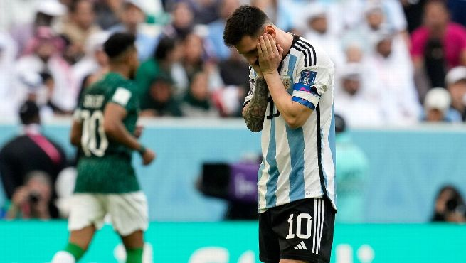
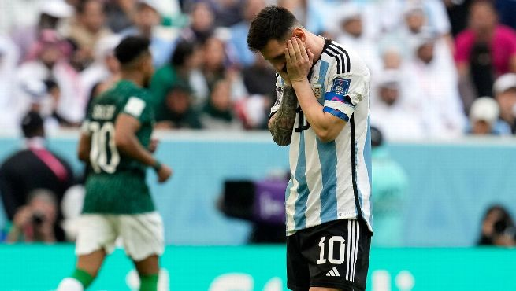

Octavos de final — Australia
Argentina 2 – 1 AustraliaEl primer cruce eliminatorio enfrentó a la Selección Argentina con Australia, en un partido que parecía encaminado pero que terminó cargado de tensión. Durante gran parte del encuentro, el equipo argentino dominó el juego, manejó la pelota con inteligencia y logró ponerse en ventaja gracias a su jerarquía individual y colectiva.
Sin embargo, en el tramo final, un gol inesperado de Australia reavivó el suspenso y convirtió los últimos minutos en una verdadera prueba de nervios. Argentina debió resistir, cerrar espacios y sostener el resultado con carácter.
En la última jugada del partido, cuando el empate parecía inevitable, Emiliano “Dibu” Martínez protagonizó una atajada memorable que selló la clasificación. Fue una intervención decisiva que no solo aseguró el pase a cuartos de final, sino que reafirmó la importancia de la solidez mental en los momentos límite.